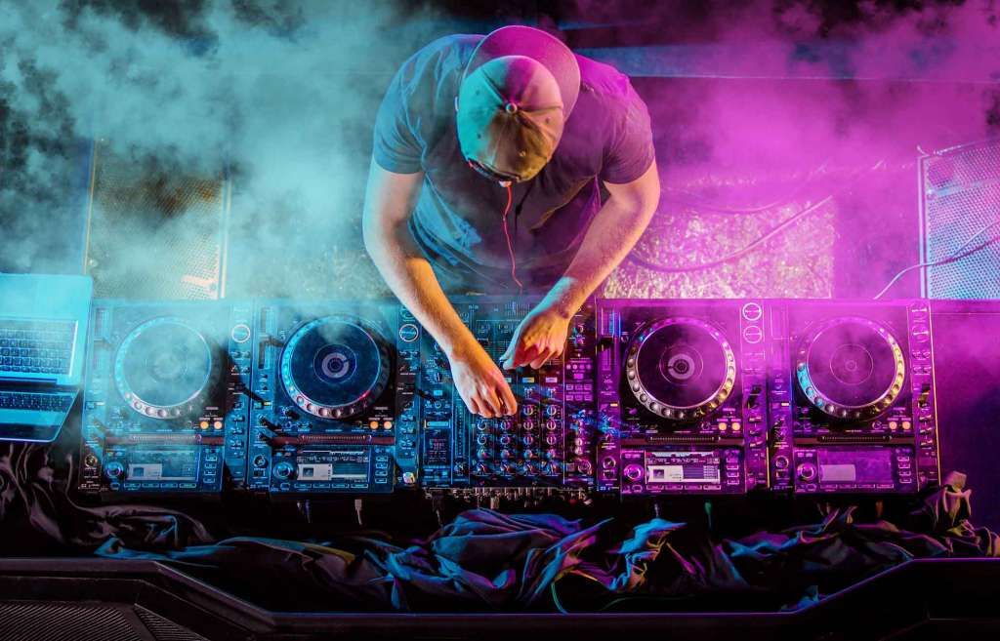
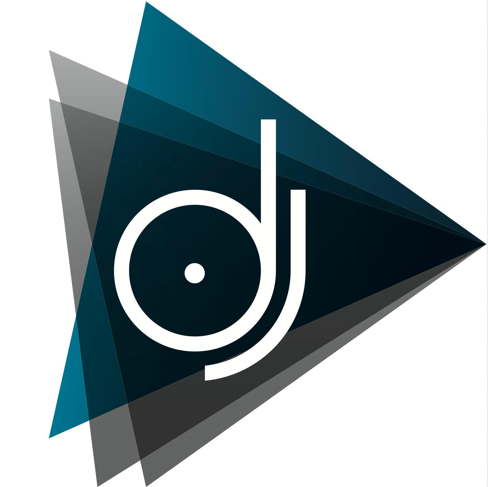
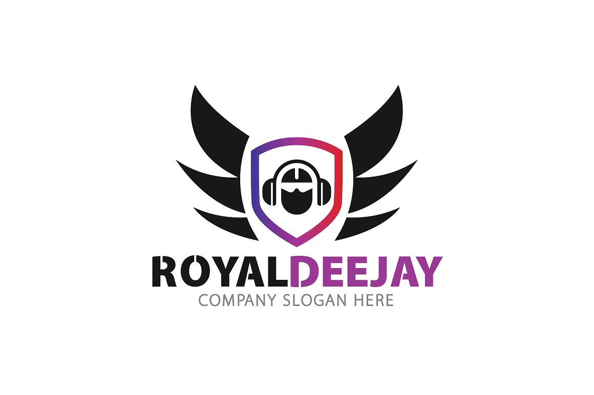

|  |  | |
The idea of the Beat MSC team is to recognize and gather in one place all the events related to the Saint Louis music scene. This web portal will be a place where people will connect, read, hear and see what's going on in Saint Louis area. We want to awaken and encourage mutual cooperation to raise the quality to an even higher level. First of all, Beat STL wants to separate quality from quantity. At Beat STL you will be able to follow the latest news, galleries from past events and order online tickets for upcoming events. |
 |